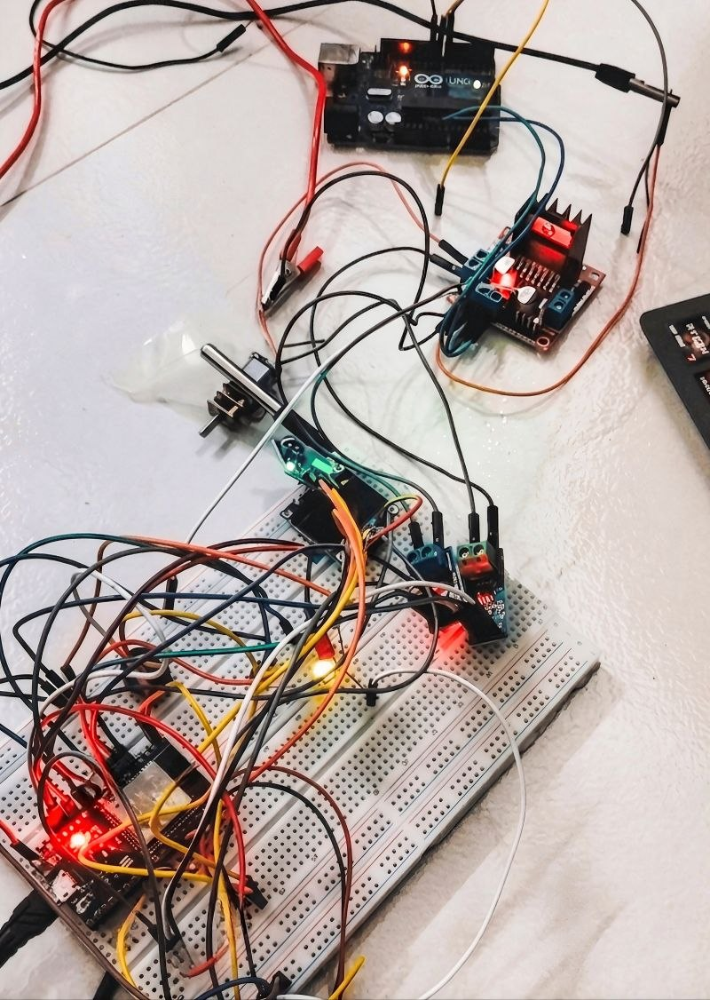

Physics-Informed Digital Twins for Micro-Mechatronic Systems
This study looks at how a digital model can track a small motor system. It combines a maths-based model with readings from several sensors. The data helps track the system and predict changes in heat. We also studied how certain the model’s predictions were.
Manuscript in revision · Journal of Intelligent Manufacturing